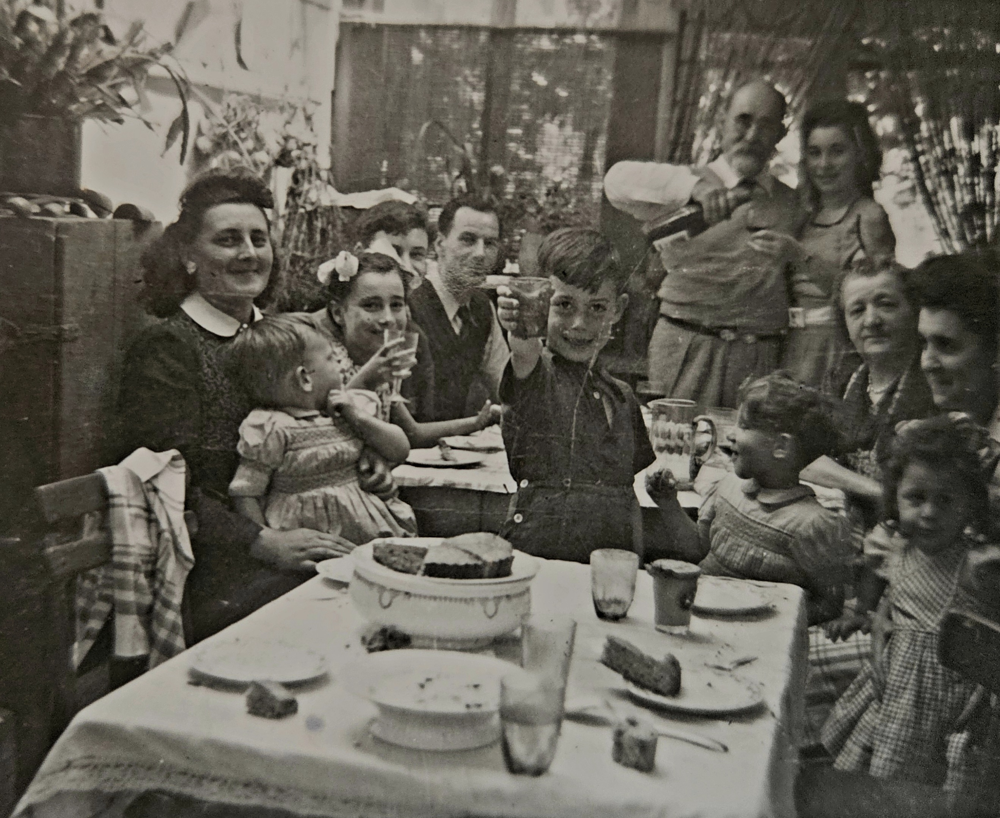

XXII LA MAISON DES GRANDS-PARENTS
1. Les mouches du cellier bourdonneront, l'anis
Etoilant ses parfums encombrera la sente,
La pompe grincera qu'un broc heurte et les nids
De guêpes sur le toit diront l'aïeule absente,
2. La maison vide, aux volets clos. Il n'y aura
Ni banc ensoleillé, ni tonnelles où pendent
Le vert cristal des grains, mais sur le seuil un drap
De velours noir et des pompons comme des glandes
3. D'argent. Il y aura... La pendule a sonné
Sempiternellement le carillon des heures.
Sur la table de bois les mains ont tant traîné
Qu'une ombre désormais incruste la demeure.
4. Un flacon de brouillard grise mieux que le vin.
Maison humble dressée au flanc de la lumière
Immobile, surgie éclair, et c'est en vain
Que les rochers du temps pour l'écraser s'épierrent-
5. Le compotier fleuri luit près du volet clos,
L'odeur des livres vieux emplit le meuble et l'ombre.
Dehors, l'automne brûle et triomphe. Les faux
Hivers pourront passer et les étés sans nombre,
6. Ils ne briseront pas la garde du pêcher
Inaltérable ni le chant de mes enfances...
Le Visage qui monte où je vais me pencher
Du roi qui régit tout sut tourner les défenses.
7. Je conterai les dits du jardin hors du temps,
Le berceau de roses où tu veilles et chantes,
Et nul ne connaîtra si la voix qu'il entend
Est l'enfant que je fus ou Celui qui me hante.
Michel Galiana (c) sept. oct. 1978
XXII THE GRANDPARENTS' HOUSE
1. There will be droning flies in the cellar, anise,
Star‑scattering its scents, will clutter up the path,
The pump struck by a jug will creak and the wasp nests
On the roof will proclaim that the grandmother passed.
2. With its shutters closed, the house will stand empty,
No sunlit wooden bench, no arbour where there hung
The green crystal of grapes — on the threshold, only
A cloth of black velvet, tassels like silver glands.
3. There will be no more… But, listen: the clock has chimed:
Its prolonged, everlasting carillon of hours.
On the wooden table hands have lingered so long
That now a shadow crusts itself into the house.
4. A flask of mist can dull the mind better than wine.
Humble house whose flank stood all of a sudden lit,
Motionless, in a flash of lightning — and vainly
Do time’s great rocks unstone themselves to crush it —
5. The flowered fruit-dish gleams beside the closed shutter,
The smell of old books fills the cupboard and the shade.
Outside, autumn burns and triumphs. The false winters
May pass, countless, and as many summers fade,
6. And they will never break, for sure, the steadfast guard
Of the peach-tree, nor the sweet song of my childhoods…
The Face that rises, towards which I lean, well knows
How to elude the all-ruling king’s keep-outs.
7. I shall recount the tales of the yard out of time
The rose-bed where you watch and sing your melody
And none will ever know if the low voice he hears
Is the child I once was, or the One who haunts me.
Note :
Transl. Christian Souchon 01.01.2004 (c) 2026 (r) All rights reserved
Le sujet du poème est le décès de la grand-mère maternelle de l'auteur, le 15 mars 1953 à Nantes. La quatrième strophe évoque la maison violemment éclairée par les phares de la voiture qui avait conduit l'auteur et sa famile de Paris à Nantes où ils arrivèrent en plein milieu de la nuit. (Cf.La maison du matin)
En 2026 l'IA a été mise à contribution pour analyser la dernière strophe du présent poème. La prophétie à propos du caractère impérissable de cette maisonnette pétrie de souvenir ne s'est pas réalisée seulement en littérature. Il y a quelques années nous sommes retournés, ma soeur cadette, mon épouse et moi, dans ce quartier de Nantes, Saint-Joseph de Porterie (ou Portric). Un tsunami urbanistique a transformé le paysage semi-rural en un dantesque labyrinthe de bretelles d'autoroutes, de rues et d'immeubles de hauteurs diveres. Et pourtant, la petite maison dont parle Michel est toujours là, on ne sait par quel miracle. Un peu transformée, mais toujours là, fidèle au poste. On la voit sur la photoc ci-dessus...
Quelques rues plus loin s'est produit un miracle analogue:
La 25, rue de la Grange-au-Loup à Nantes est l'adresse tragique immortalisée par la compositrice-interprête Barbara dans sa célèbre chanson « Il pleut sur Nantes » (1964), où elle évoque l'agonie et la mort de son père, qu'elle rejoint trop tard.
Au moment où Barbara écrit et compose la chanson, le 25 rue de la Grange-au-Loup n'existait pas encore formellement sous ce nom ou à cet emplacement exact tel qu'il est chanté, la rue ayant été créée ou dénommée plus tard en lien avec l'histoire locale et la mémoire de l'artiste "rue de la Grange-au-Loup". Une plaque et une inauguration de la rue ont depuis ancré cette adresse dans la géographie nantaise. (Information: Google).
Peut-être la petite maison de l'ancienne avenue de l'Alouette attend-elle, elle aussi, d'être ornée d'une jolie plaque...
This poem is relating to the death of the author's grandmother, on March 15, 1953 in Nantes. The fourth stanza evokes the house violently lit by the headlights of the car which brought the author and his family from Paris to Nantes where they arrived in the middle of the night. (Cf.La maison du matin)
In 2026, AI was employed to analyze the final stanza of this poem. The prophecy regarding the enduring nature of this little house—steeped as it is in memory—did not come true solely within the realm of literature. A few years ago, my younger sister, my wife, and I returned to that Nantes neighborhood, Saint-Joseph de Porterie (or Portric). An urban tsunami had transformed the semi-rural landscape into a Dante-esque labyrinth of highway ramps, streets, and buildings of varying heights. And yet, the little house Michel speaks of is still there—by what miracle, one cannot say. Slightly altered, perhaps, but still standing, faithful to its post. You can see it in the photo above...
A few streets away, a similar miracle occurred:
25 Rue de la Grange-au-Loup in Nantes is the tragic address immortalized by the singer-songwriter Barbara in her famous song "Il pleut sur Nantes" (1964), in which she recounts the final moments and death of her father—whom she reached too late.
At the time Barbara wrote and composed the song, 25 Rue de la Grange-au-Loup did not yet formally exist under that name or at the exact location described in the lyrics; the street was created or designated later, in connection with local history and the artist's legacy. A plaque and an official street inauguration have since anchored this address in the geography of Nantes.
(Source: Google).
Perhaps the little house on the former Avenue de l'Alouette is also waiting to be adorned with a lovely plaque...

Réunion familiale: parents, grands-parents, cousins à la maison de Nantes
Michel (4ème à p. gauche) est assis entre sa soeur Eliane et son père
Commentaires sur la strophe 7 générés par l'IA en 2026
Comments on stanza 7 generated by AI in 2026
|
C’est l’une des fins les plus subtiles de Michel. Elle parachève l’architecture du poème en fusionnant mémoire, mythe et identité en une voix unique et en suspens. 1. « Je conterai les dits du jardin hors du temps » Ce « jardin hors du temps » n’est pas simplement le jardin des grands-parents. C’est l’espace mythique de l’enfance, le lieu originel de la mémoire, le sanctuaire intérieur où l’identité s’est d’abord façonnée. Tout au long du poème, la maison fait figure de reliquaire de l’enfance. Ici, le jardin devient le prolongement mythique de ce reliquaire. Le qualifier de « hors du temps » signifie qu’il échappe à la décrépitude, qu’il résiste aux « faux hivers » et aux « étés innombrables », qu’il existe en dehors du temps chronologique ; il est préservé par la mémoire, et non par le monde. Ce vers annonce le rôle du poète : il devient le dépositaire des récits du jardin, le gardien des origines. 2. « Le berceau de roses où tu veilles et chantes » Qui est ce « tu » ? L’ambiguïté est voulue. Il peut s’agir de la grand-mère, de la mère, de la figure tutélaire intérieure de l’enfant, voire de la maison elle-même, personnifiée. Mais l’élément clé est le massif de roses : les roses symbolisent la beauté, la fragilité et la permanence de l’enfance ; le massif évoque le berceau, l’origine, l’espace maternel ; « où tu veilles et chantes » renvoie au regard protecteur, à la berceuse, à la transmission de l’identité. C’est le berceau de la mémoire, le lieu où s’est formé le moi originel du poète. 3. « Et nul ne connaîtra si la voix qu'il entend / Est l’enfant que je fus… » C’est la première partie de la révélation contenue dans cette strophe. Le poète reconnaît que lorsqu’il évoque la maison, le jardin ou l’univers de l’enfance, la voix qui s’élève n’est pas clairement celle de l’adulte. Il peut s’agir de la voix de l’enfant, préservée intacte, de la voix de l’innocence ou de celle de l’origine. C’est une affirmation profonde : la mémoire ne s’exprime pas avec la voix de l’adulte, mais avec celle de l’enfant qui a vécu ces moments. 4. « …ou Celui qui me hante. » C’est le vers le plus mystérieux du poème. Qui est ce « Celui qui» ? Ce n’est pas l’enfant. Ce n’est pas la grand-mère. Ce n’est pas la maison. C’est la présence intérieure que la mémoire éveille — cette figure obsédante qui : veille sur le pêcher, préserve le chant de l’enfance, détourne les défenses du « roi souverain », surgit tel un Visage vers lequel le poète se penche. Cet « Être » est l’enfant intérieur métamorphosé, l’esprit gardien de la mémoire, le double mythique du poète, la voix du passé qui s’exprime à travers lui, la présence que la mémoire installe au sein du moi adulte. C’est la force obsédante des origines — cette part du poète qui n’a jamais vieilli. 5. La signification de la strophe : une identité partagée entre passé et présent La dernière strophe révèle le thème le plus profond du poème : La mémoire crée un double. Le poète n’est jamais seul : il est accompagné de l’enfant qu’il fut et de la présence obsédante que cette enfance a laissée en lui. Lorsqu’il évoque la maison, le jardin, la grand-mère, le pêcher, les objets, la lumière, la voix qui émerge n’est pas uniquement la sienne. C’est une voix composite : à la fois enfant, présence obsédante et adulte qui se souvient. C’est pourquoi « nul ne saura jamais » à qui appartient cette voix. Même le poète ne parvient pas à les distinguer pleinement. 6. Pourquoi cette fin est parfaite Parce qu’elle parachève l’architecture du poème : la maison est préservée. Les objets résistent au temps. Le pêcher veille sur la mémoire. Le Visage surgit. Les défenses du roi sont détournées. Et enfin, la voix du poète se révèle être une voix habitée par un spectre. Le poème ne s’achève pas dans la nostalgie, mais dans une ambiguïté métaphysique : le moi est dédoublé, hanté, préservé et transformé par la mémoire. |
This is one of Michel’s most subtle endings. It completes the poem’s architecture by merging memory, myth, and identity into a single unresolved voice. 1. “I shall recount the tales of the yard out of time” The “timeless garden” is not simply the grandparents’ garden. It is: the mythic space of childhood, the origin-place of memory, the inner sanctuary where identity was first shaped. Throughout the poem, the house is a reliquary of childhood. Here, the garden becomes the mythic extension of that reliquary. Calling it “timeless” means: it is not subject to decay, it resists the “false winters” and “countless summers,” it exists outside chronological time, it is preserved by memory, not by the world. This line announces the poet’s role: he becomes the keeper of the garden’s stories, the guardian of origins. 2. “The rose-bed where you watch and sing your melody” Who is “you”? It is deliberately ambiguous. It can be: the grandmother, the mother, the child’s inner guardian, or even the house itself, personified. But the key is the rose bed: roses = childhood beauty, fragility, permanence; the rose bed = cradle, origin, maternal space “where you watch and sing” = the protective gaze, the lullaby, the transmission of identity. This is the cradle of memory, the place where the poet’s earliest self was formed. 3. “And none will ever know if the low voice he hears / Is the child I once was…” This is the first half of the stanza’s revelation. The poet acknowledges that when he speaks of the house, the garden, the childhood world, the voice that emerges is not clearly his adult voice. It may be: the child’s voice, preserved intact, the voice of innocence, the voice of origin. This is a profound statement: memory does not speak in the adult’s voice — it speaks in the voice of the child who lived it. 4. “…or the One who haunts me.” This is the most mysterious line in the poem. Who is “the One”? It is not the child. It is not the grandmother. It is not the house. It is the inner presence that memory awakens — the haunting figure who: guards the peach tree, preserves the song of childhood, turns aside the defences of the “all ruling king,” rises as a Face toward which the poet leans. This “One” is the inner child transformed, the guardian spirit of memory, the mythic double of the poet, the voice of the past that speaks through him, the presence that memory installs in the adult self. It is the haunting force of origins — the part of the poet that never grew old. 5. The stanza’s meaning: identity split between past and present The final stanza reveals the poem’s deepest theme: Memory creates a double. The poet is never alone: he is accompanied by the child he was, and by the haunting presence that childhood left within him. When he speaks of the house, the garden, the grandmother, the peach tree, the objects, the light — the voice that emerges is not purely his. It is a composite voice: part child, part haunting presence, part adult remembering. This is why “none will ever know” whose voice it is. Even the poet cannot fully distinguish them. 6. Why this ending is perfect Because it resolves the poem’s architecture: The house is preserved. The objects resist time. The peach tree guards memory. The Face rises. The king’s defences are turned aside. And finally: the poet’s voice is revealed as a haunted voice. The poem ends not in nostalgia, but in metaphysical ambiguity: the self is doubled, haunted, preserved, and transformed by memory. |